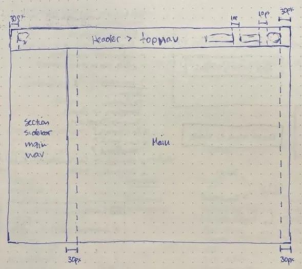
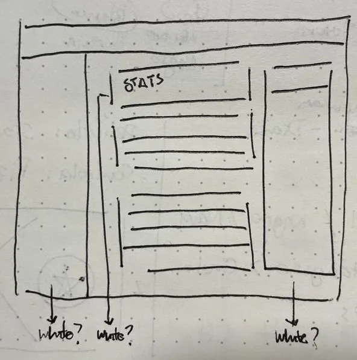
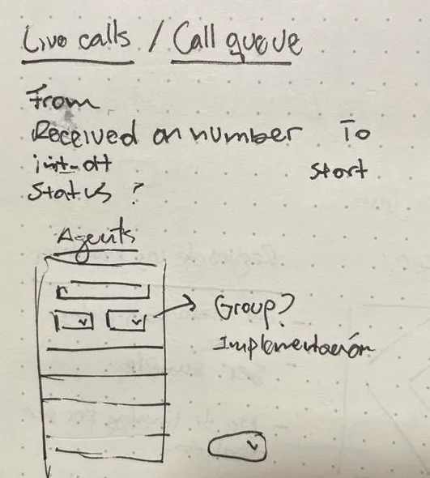
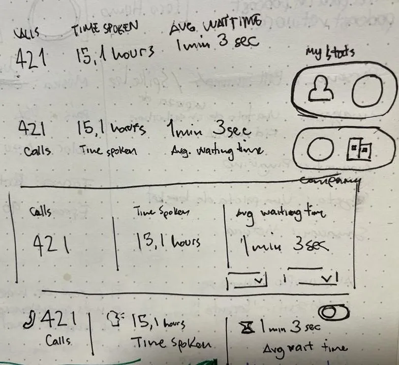
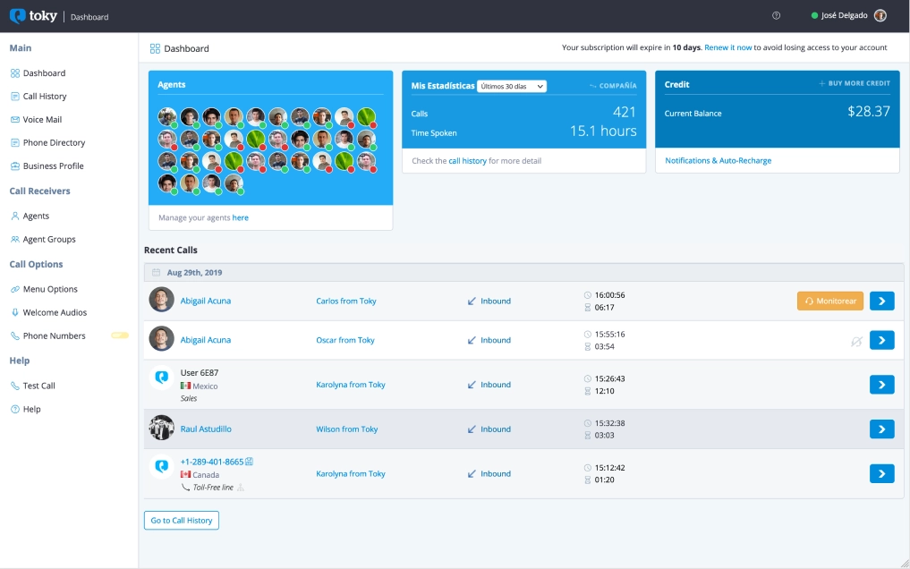
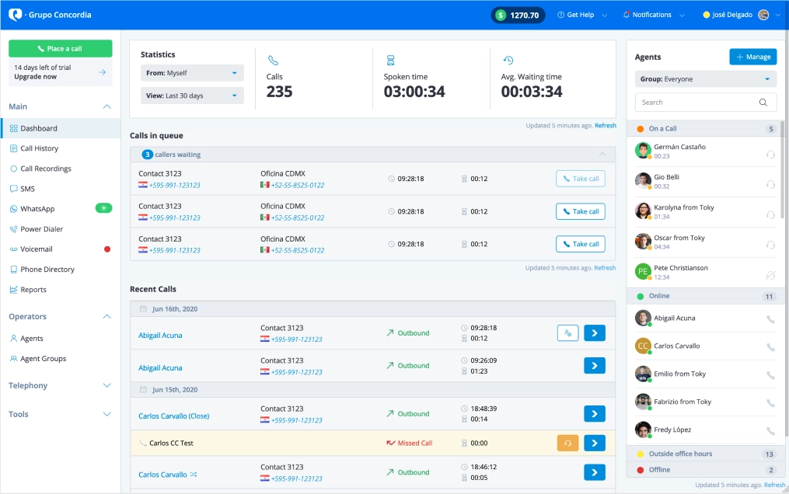

Dashboard Redesign
Role: Product Designer
When: October 2020
The Opportunity
We were coming to a point on which we wanted to make a bigger impression for the first screen that a customer sees when they create an account: The Dashboard. We wanted to give more control, we wanted to expose relevant real-time information, and we also wanted to alert them about new features.
The goal
It’s been a while since the Dashboard was designed, so we wanted to make a refresh to make it feel more functional and modern, and we also wanted to give ourselves space to grow.
Research
Since we were basically our own customers for this one (the current Dashboard worked fine), I started setting up interviews with my teammates to understand what they thought it was missing from both our platform and the Dashboard.
The main focus for Support was:
- Give more visibility on the statuses of the agents
- Get ready for bigger accounts, with many many more agents than the current design allowed for
- Differentiate stats for administrators and agents

Reinforced notions of page structure

Some color discussion, the most contrast = important information

New features: Call queue & Agents unit

More real time data
All new features had their place, we just had to make sure that we can deliver them in a performant way.
Proposed solution
We wanted to make room for all new units of information:
- Notifications
- Live calls
- Call Queue
- Improved Agents List
Final Comparison
There wasn’t too much space for announcements, and the agents section was pretty limited and lacked information depth.
Before

The original Dashboard design
After

The new and improved Dashboard!
Some notable improvements:
- Moved the credit to a more persistent place, so people are aware of where they stand when they’re using features that depend on credit: call, messaging, power dialer.
- Notifications and Help Center are also more persistent, and easier to spot.
- The new Agents Section: grouped by status so administrators have more sense of the status of their workforce at a glance. One thing that I was proud of for this particular section is that I was able to add accordion functionality here without using any javascript, just with CSS magic.
- Recent Calls: Separated the calls in queue, with the ability to take those calls if an agents (or helpful administrator) becomes available.
- Explicit Refresh control for every section.
- Main navigation broken down and collapsable.
Business Impact
Making the customer be more mindful of their credit and not rely solely on email notifications to see when they’re running low, allowed them to know when to top up in a more efficient manner. This directly translated on more revenue for us.
Having a clear separate section for agents with a clear CTA for management made administrators more aware of their needs, that made it easy to know when to add more agents. More agents = more subscriptions = more revenue.
The call queue resulted in less missed calls for our customers, and giving the option to take the call after the fact really made a difference for the busier groups of agents. This made a huge difference on their quality of life in the platform.